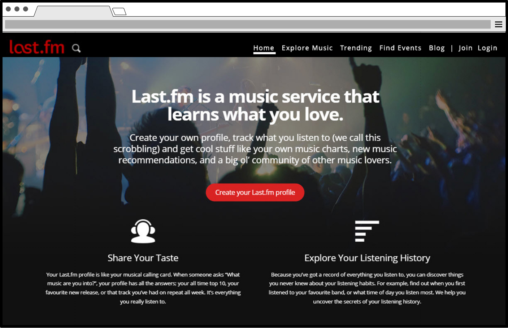
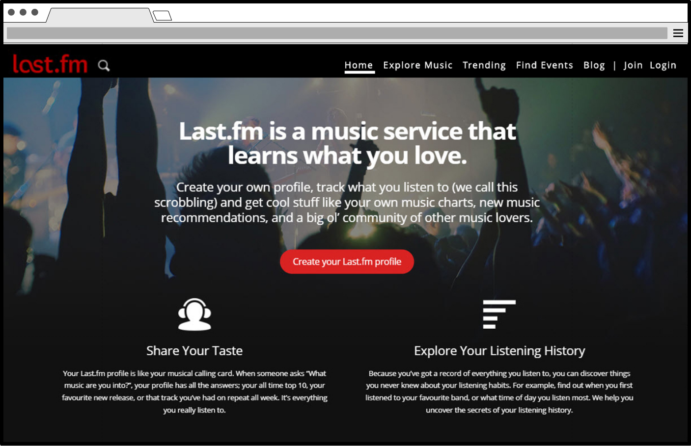

Last.fm is a music information website that allows users to dive into their listening history, discover new artists through recommendations, and share their experience with like-minded individuals.
Based on preliminary research, our goal was to test website navigation, review content credibility and define the brand identity through consistent layout design. Observation-based testing was the most effective way to investigate how users interacted with Last.fm and included: Persona building, Heuristic checklists and restructering content.
In order to reinforce the purpse of Last.fm, our team recommended home page updates and defining quirky words like "scrobble". By establishing a cross-platform authentication of content, users can feel more confident in the source of music information.
While the surface testing was useful, the results of our usability tests showed that more opportunities lie under the premium subscription-based membership that Last.fm offers.


Bubble Pup is a cute boba cafe where both owners and pets can enjoy a nice treat. Our team was tasked with designing a responsive website based on the pastel vibes of the cafe.
The site's content had to be addressed with the client first in order to successfully design a layout for mobile, tablet and desktop versions. Providing a checklist to determine which information should be included in the website really helped narrow the docus on crucial feedback. Based on this information, we decided that the most important categories on the website were social media, menu, and contact information.
To ensure that the website was accessible, the layout designs were kept simple and images were marked up for screen readers. The website showcased photos from cafe visitors as well as any pertinent contact and product information.


Discovering techniques to give users feedback and visual cues can be done by mocking up the client's idea. This project aimed to demonstrate the usefulness of a prototype in the web design & development workflow process. As an avid fan of the movie Space Jam, I created a quiz that showcased how a user might walk through the workflow of a quiz application.
Above is the interactive prototype. At the time of the original website's creation, designing for mobile didn't exist so it was interesting to compare just how far web design has come. Today, understanding user experience fundamentals is important in any product development.

With the mockup already provided, the client requested that we build the website based on the design using semantic and validated code. Most of the content or copy was provided so at this point identifying design considerations for a fixed layout was important.
While the client's expectations were met, it was recommended that their next project should focus on mobile responsive design so that users could have a better experience on their phones and on the go.

Sometimes cats just want to have fun. Cat Plinko was developed as a nod to the original Plinko game with a purrfect twist.
Based on real feline behaviors, we have the user start the game as a cat and the rest is pretty predictable. See a mouse? Pounce and it's gone. Did they go near water? Watch the screen flash in alarm. It's all fun and games until the cat gets wet.